Link
- https://elpais.com/elpais/2011/04/13/media/1302692233_720215.html
- En esta infografía se compara la situación socioeconómica de Barcelona con la de Madrid
- Esa comparación trabaja con múltiples categorías, entre ellas: paro, vivienda, salud...etc
- Considero que para la realización de esta infografía se ha debido utilizar un programa destinado al manejo de datos (como excel), además de un programa destinado al diseño.
- La utilidad de esta infografía se basa en la posibilidad de visualizar datos de forma sencilla y accesible para las personas con un nivel cultural medio, puesto que, si se muestran estos datos sin imagen y sin procesar podría resultar confuso.
- Esta comparativa utiliza diversos tipos de gráficos:
- Los primeros son circulares y los datos de inmigrantes se muestran a través de un cambio de color en el área de la circunferencia. De esta forma, podemos ver la comparativa de forma rápida.
- Los siguientes son de barras y ocupan la mayoría de la infografía
- Además de esto podemos encontrar una tabla comparativa con datos
Entrega segunda: Infografía
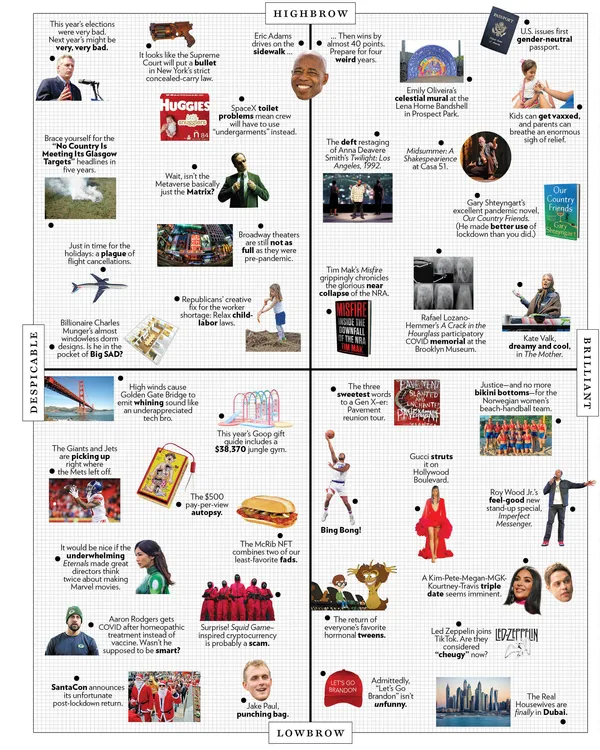
- The Approval Matrix, NOV 5, 2021, Kate Wellington
Análisis
Introducción
- He escogido esta infografía por la importancia tan notable que ha tenido a lo largo de los últimos años en el mundo del periodismo estadounidense (esto se refleja en que en 2011 se llegó a estrenar un talkshow basado en The Approval Matrix). Pertenece al New York Magazine y muestra, con humor, las noticias sobre la cultura pop ordenadas según la opinión personal de los críticos de la revista.
- Esta infografía se encuentra en la Web, por lo tanto utiliza código HTML, en concreto, HTML5, que es el que opera actualmente.
- Sin embargo, tras un exhaustivo trabajo de investigación, he llegado a la conclusión de que el creador de esta infografía no utilizó un lenguaje informático o de programación de forma directa para realizar este trabajo, sino que hizo uso de un programa que genera automáticamente infografías. Este programa se trata de: thinklink.com
- Este es un programa de pago basado en el diseño de infografías y, al hallarse en la Web, también utiliza un lenguaje HTML
- El uso de este programa revela un problema creciente en el mundo del periodismo de datos. Muchos creadores de contenido utilizan servidores de terceros sin saber utilizar un ordenador desde lo más básico, el código.
¿Es periodismo de datos?
- Por otra parte, lo original en la elección de esta infografía para una asignatura como periodismo de datos se centra en que, ¿realmente pertenece a este ámbito? Para responder a esta pregunta tendremos que establecer qué es el periodismo de datos
- Periodismo: cuando hablamos de periodismo nos referimos al trabajo de investigación. Evidentemente en esta infografía existe un trabajo de investigación, ya que recopila las noticias más importantes de la cultura pop, las filtra y selecciona para que sea tanto relevantes como divertidas para el lector. Para ello, además, deben existir estudios previos de la popularidad de estas noticias.
- Visualización de datos: al tratarse de una infografía podemos encontrar un claro trabajo con el fin de que los datos puedan visualizarse. Además, el elemento cómico basado en categorizar los hechos presentados según adjetivos exagerados facilita el acceso del lector a la crítica y potencia el elemento de entretenimiento del mismo.
- Datos: es dudoso que se utilicen datos en esta infografía (o un tratamiento de los mismos). Sin embargo, es evidente que se ha trabajado con ellos en el filtrado de las noticias y en pos de conocer la popularidad de las mismas en Estados Unidos. Que una infografía dé datos cualitativos no implica que estos no hayan tenido que ser filtrados a través de un programa de gestión de datos, como podrían ser excel u Openrefine. Por lo tanto, la infografía realiza una gestión de los datos para seleccionarlos y ordenarlos.
- Otro elemento a reseñar es que al realizar Control + u en la página se puede acceder directamente al código HTML utilizado. En este, he observado que The New York Magazine cuenta con una estructura compleja en la que, a través del uso del lenguaje informático, organiza la página por columnas (de forma semejante a las revistas en papel) y que cuenta con un código base que, posteriormente, se adapta a cada publicación concreta. Esto podemos intuirlo porque utiliza el mismo código en publicaciones diferentes para cuestiones como: identificar al autor, organizar la página, situar las redes sociales del medio...etc.
- Podemos identificar también que esta infografía se encuentra en HTTPS: S indica que es una página segura, HTTP que se trata de un dominio en internet.
Link
https://nymag.com/article/2021/11/the-approval-matrix-week-of-november-8-2021.html
Práctica 3 de periodismo de datos
Imágenes
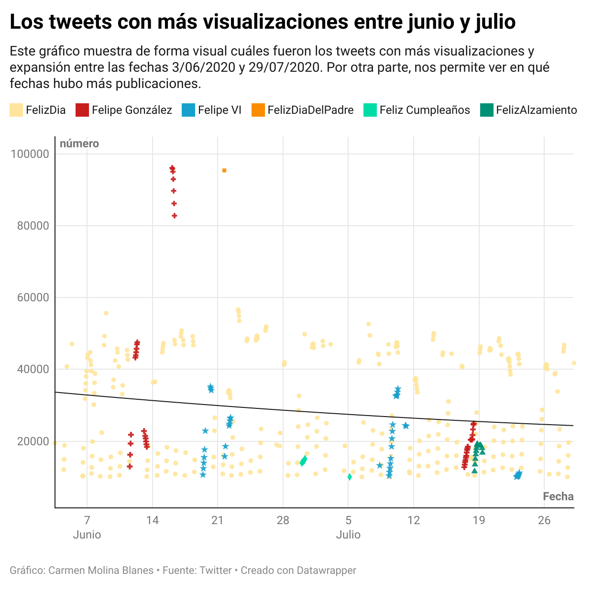
Explicación del proceso: terminal y Openrefine
- Para el siguiente proyecto ha sido necesario el uso de la terminal a la hora de descargar los archivos que, posteriormente, se filtrarían con el programa Openrefine. El archivo feliz.csv fue descargado a través del comando "git clone". Este comando permite que las carpetas y archivos presentes en un repositorio de Github se descarguen en el ordenador, por lo que posibilita que se pueda trabajar desde la terminal con ellos.
- Tras esto, subí el archivo a Openrefine, donde pude filtrar los datos que quería estudiar. En primer lugar, indiqué el tipo de datos con los que contabacada columna: texto, fecha, número...etc. De esta forma, Openrefine me permitía hacer uso de su sistema de visualización de datos, lo que me facilitó su selección y la eliminación de aquellos que no me eran útiles.
- A través de la función facet he podido borrar todos los datos que eran claramente erróneos. Por ejemplo: aquellos tweets que aparecían con fecha de 1970. Lo que he hecho ha sido marcar ese periodo de tiempo y eliminar todas las celdas que se correspondiesen a esa selección. Por otra parte, hay datos como los de Felipe González y Felipe VI que podría haber eliminado a través de la función facet para texto (seleccionando la categoría "Felipe VI" y eliminando todos los datos que se correspondieran con ella). Sin embargo, he optado por dejarlos ya que la finalidad de mi proyecto no se centra en la palabra "feliz" en sí misma, sino en qué tweets iniciados por "feli" fueron más vistos en el periodo de más actividad de publicaciones (junio-julio) y me resultó interesante que algunos de los más visitados estuvieran relacionadas con política y no con palabras relativas a la felicidad.
- El gráfico que he realizado trabaja con tres variables: fecha, nombre del tweet y número. El objetivo es ver qué tipo de tweets tuvieron más éxito durante la época con más actividad en la red social. Para ello he utilizadola función facet, con la que he realizado un gráfico temporal donde he señalado la época desde 2020-06-03 hasta 2020-07-30.
- Por otra parte, los datos de texto han sido filtrados a través de la función "cluster" que me permitió fusionar todos los datos que contaban con la misma información pero escrita de forma distinta. Por ejemplo: los datos como "Feliz Jueves" han sido fusionado con otros como "FelizJueves". Esto hace que las decenas de categorías textuales que propone la función "facet" se queden en 15, una cantidad mucho más manejable.
- Por último, he usado la función "facet" con la columna "número" y he marcado que se muestren únicamente los datos que cuentan con una información númérica y que no se mostraran las casillas en blanco.
- Para eliminar los Hashtags en los datos de texto y las Zs en los de fecha he utilizado la función "transform" con la fórmula "value.replace("Z","")".
Proceso en Datawrapper
- En Datawrapper he insertado el archivo csv y posteriormente he marcado qué tipo de datos se correspondía con cada columna: fecha, texto, número.
- Posteriormente, he trabajado en la visualización, para ello he tomado las siguientes decisiones:
- He elegido un gráfico de dispersión para mostrar mis datos.
- He escogido colores y formas difetentes para los datos que correspondían a un mismo tweet.
- He añadido una línea que indica el cremimiento o decrecimiento de los datos agrupados.
- He situado los datos de fecha en el eje X y los numéricos en el eje Y.
- He insertado etiquetas a los datos para que al pinchar encima se pueda leer a qué categoría pertenece cada dato.
- He añadido una descripción y una fuente
Explicación del gráfico
- He escogido un gráfico de dispersión porque me pareció el más apropiado para visualizar qué tweets se publicaron entre junio y julio de 2020. Esto se debe a que permite observar la frecuencia de los mismos. Se puede apreciar, por ejemplo, que el color amarillo se repite mucho, por lo que encontramos una gran cantidad de tweets felicitando el día. Sin embargo, los que cuentan con mayor visualización son los de Felipe González, sobre todo en el periodo de Junio.
- He realizado una distinción por colores en la que he aunado algunos datos que eran similares a nivel conceptual (por ejemplo "Felipe VI" y "FelipeyLeticia" aparecen del mismo color porque ambos son referidos a la realeza española). La distinción se debe a que esta permite una visualización más sencilla de los disntintos datos y su extensión por Twitter. Por otra parte, la decisión de aunar algunas categorías de Tweets ha surgido de que existían muchos datos, a veces aislados, representados con un color, lo que hacía verdaderamente confuso analizar el gráfico, ya que había muchas categorías muy minoritarias.
- La elección de colores tiene un sentido: el amarillo representa la felicidad, por lo que es el color elegido para felicitar el día; Felipe VI viene representada por el azul, ya que se vincula este color a la nobleza; y Felipe González aparece en rojo por ser el exlíder del PSOE. Por otra parte, la finalidad de las formas es que resalten todos los datos, sobre todo aquellos que son minoritarios y a penas se apreciarían de otra forma.
- La línea decreciente busca analizar en qué época se publicaron más tweets que comenzaran por "feli" y es evidente que esta cifra decrece a medida que se adentra en julio. La explicación a esto es sencilla: en junio aún nos encontrábamos en periodo de desescalada de covid con muchas restricciones de movilidad, por lo que la gente tenía más tiempo para utilizar las redes sociales. Sin embargo, en julio la desescalada era casi completa.
- Por otra parte, destaca la importancia y visibilidad que tienen los tweets relativos a Felipe González. Esto se debe a que el 12 de junio de 2020 expresó ciertas contra el gobierno central en una época donde su actuación era muy cuestionada por gran parte del país.
La policía actúa en Madrid
Análisis del proceso
OpenRefine
Para procesar los datos utilizados (extraídos en formato csv de la página datos.madrid.es) he utilizado únicamente la herramienta OpenRefine. En primer lugar, he eliminado aquellas columnas que no resultaban útiles para el análisis de datos que quería realizar. Después, he utilizado la fórmula value.replace("","") para borrar elementos innecesarios que aparecían con los datos (como algunos guiones sin sentido). Otro paso básico que he realizado ha sido marcar el tipo de datos con el que estoy trabajando (texto y número) lo que me ha permitido usar la función facet.
Después de esto he usado la función facet (text) para seleccionar las filas que no me servían para cada proyecto (también he utilizado la función star con esta finalidad). Posteriormente las he borrado con la función "remove matching rows". Por ejemplo, para muchas gráficas no necesitaba el total de actuaciones policiales, por lo que, a través de facet, he buscado el nombre "TOTAL DE ACTUACIONES", lo he señalado y posteriormente lo he eliminado. Sin embargo, en aquellos casos en los que he tenido que eliminar más de una fila, ha sido más práctico marcar las filas inservibles con star y después eliminarlas.
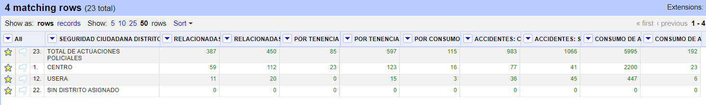
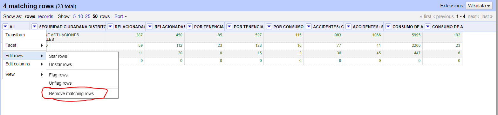
Para relizar algunas de las gráficas, me he visto obligada a eliminar algunas celdas que, para posteriores gráficas, me eran útiles. Por lo tanto, he hecho uso de la función "undo" para recuperar los datos borrados.
En el caso del análisis de los accidentes con víctimas y sin víctimas he hecho uso del recuento de datos de texto creando una columna con:
- value = value.strip().lower() if "con víctimas" in value: return "Accidente con víctimas"
- row.record.cells["Accidente con víctimas].value.sum()
Una función que he utilizado con bastante asiduidad ha sido "sort". a través de esta función he podido hallar, por ejemplo, cuáles son las cuatro zonas de Madrid con más actuaciones policiales en términos de conflictos entre personas (por ejemplo).
Otra forma en la que he utilizado la función facet ha sido para seleccionar rangos numéricos. Por ejemplo, en la gráfica donde muestro de forma comparativa los distritos con más de 200 casos de actuaciones policiales por consumo de alcohol en la vía pública por parte de adultos y con menos de 1000.
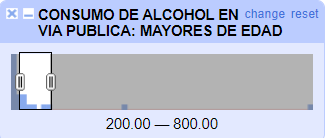
Datawrapper
En Datawrapper he realizado un total de 6 gráficos. Para ello, he tenido que seleccionar dentro de la propia aplicación cuáles de las columnas me eran útiles y cuales no. Por otra parte, he seleccionado qué tipo de dato se correspondía con cada columna (texto y número).
Por otra parte, he usado diversos tipos de gráfico, ya que Datawrapper da una amplia posibilidad de elección dentro de su aplicación. Entre ellos he utilizado: mapas, gráficos de dispersión, gráficos de barras, un pie chart...etc. La selección está ligada al tipo de datos que quiero visualizar:
- En caso de querer mostrar una gran cantidad de datos textuales (con finalidad comparativa) y dos tipos de datos numéricos he usado un gráfico de dispersión;
- mientras que he usado el modelo del mapa para visualizar de forma espacial algún dato numérico concreto (por ejemplo, las actuaciones policiales por tenencia de drogas).
- Sin embargo, para no generar una sensación de monotonía en el artículo, solo he elaborado un mapa, por lo que he utilizado también gráficos de barras para reflejar comparativamente algún dato numérico concreto por distritos.
- Por otra parte, para comparar dos o varios distritos diferentes he utilizado tanto el pie chart y la columna apilada.
A la hora de elaborar las visualizaciones, he utilizado principalmente el cambio de colores, las etiquetas...etc.
Por último, he hecho uso de la función de "insertar título" e "insertar descripción" para que los gráficos puedan comprenderse mejor.
Análisis
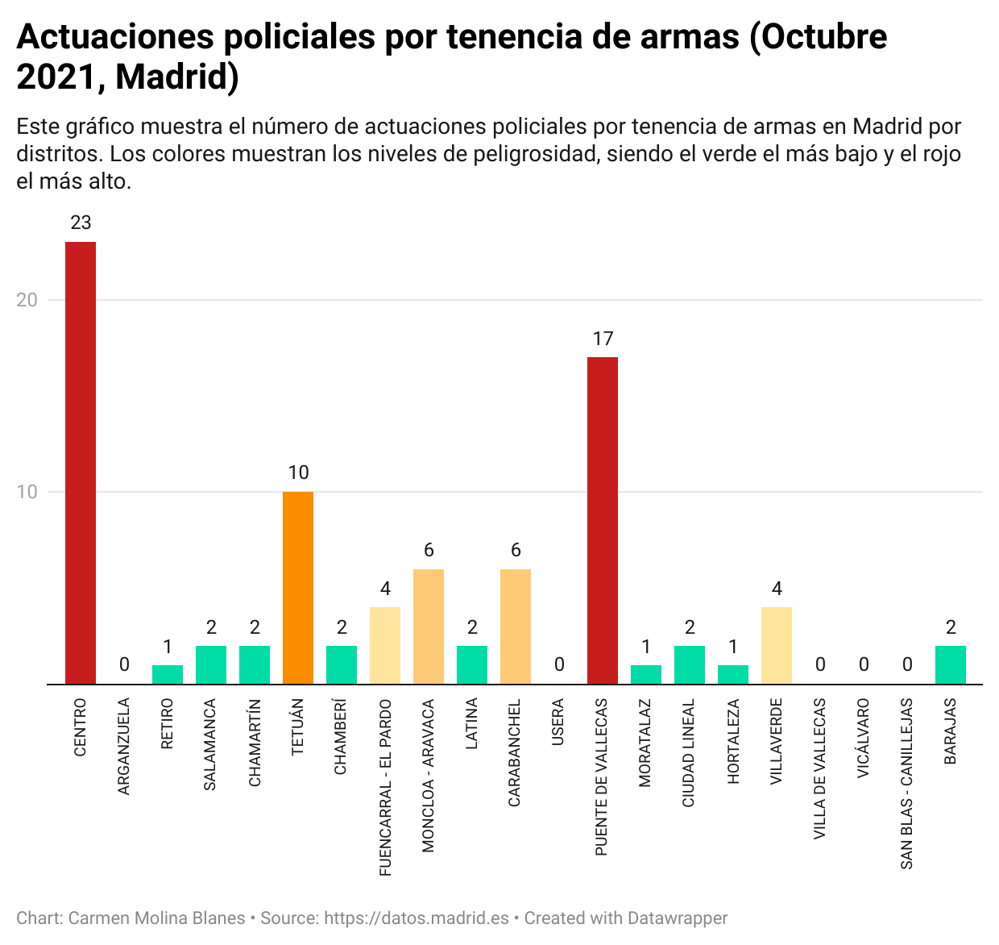
En esta imagen he analizado los datos de tenencia de armas por distritos de Madrid. El uso de un gráfico de columnas permite que se visualice fácilmente cuáles son las zonas donde se ha cometido este delito con más frecuencia.
Al ser la posesión de armas una fuente de peligro, he dividido los colores según el nivel de peligrosidad de la zona. El rojo, el naranja, el amarillo y el verde son los colores que he utilizado para representar el concepto de la peligrosidad. Esto se debe a que, naturalmente, identificamos el rojo, el amarillo y el verde con grados de peligro. Esto se utiliza tanto en gráficos de meteorología como en los propios semáforos.
En este gráfico, podemos observar que en Octubre de 2021 las zonas con más actuaciones policiales por tenencia de armas fueron Puente de Vallecas y Centro.
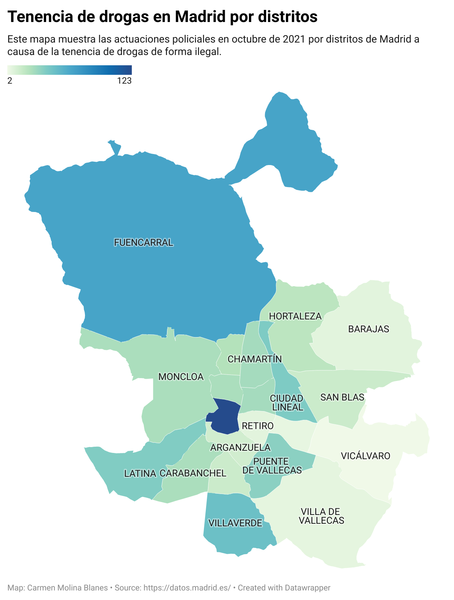
En este mapa podemos ver, con tonalidades de azul, las zonas donde ha habido más actuaciones policiales por tenencia de drogas (en azul más oscuro) y las zonas en las que ha habido menos (azul más claro, llegando incluso a parecer color pistacho).
He etiquetado únicamente las zonas más grandes del mapa para que el lector habitante de Madrid pueda ubicarse en el mapa.
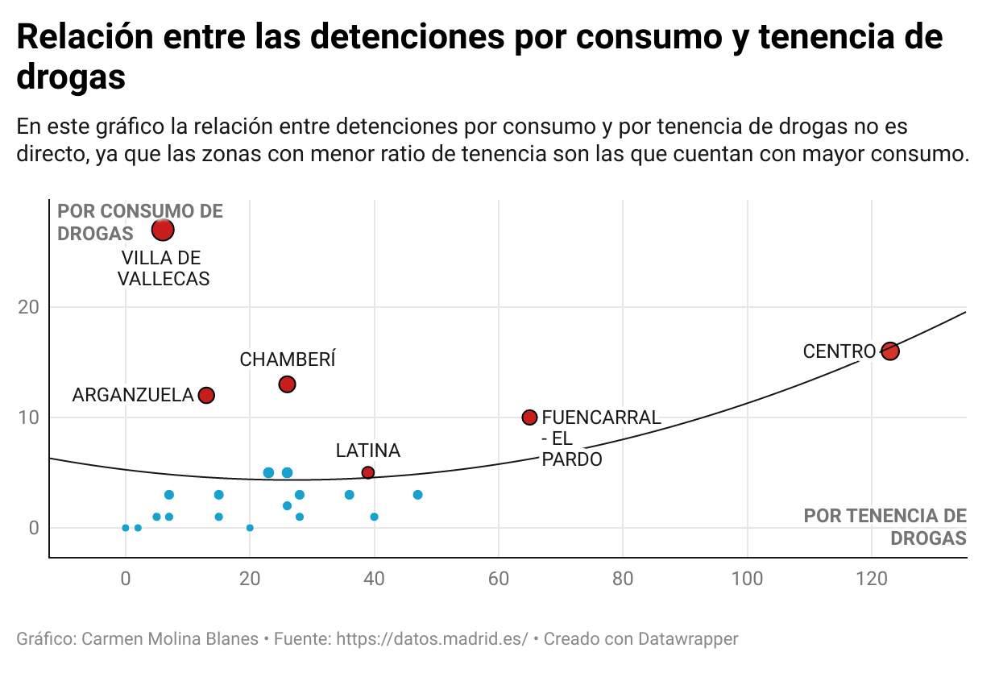
En este gráfico de dispersión he utilizado diversos elementos a analizar:
- El primero es el uso de una línea de frecuencia, que evidencia que la relación entre las actuaciones policiales por tenencia de drogas no son directamente proporcionales a las de consumo de las mismas. Esto se debe a que hay una gran cantidad de zonas (ćomo Villa de Vallecas, Arganzuela o Chamberí) donde la presencia de delitos por tenencia de drogas es muy baja, mientras que los delitos por consumo de las mismas son llamativamente altos. Es por ello que la línea no es continua, sino que genera una forma convexa.
- Por otra parte, es destacable el cambio de colores en los datos de la gráfica. Este trata de mostrar con más intensidad aquellos datos con mayor incidencia de ambas variables (o aquellos que tienen una incidencia muy notable de una sola, como Villa de Vallecas, Arganzuela o Chamberí). Además, estos datos son los únicos que vienen acompañados de un nombre, lo que ayuda a que resalten aún más.
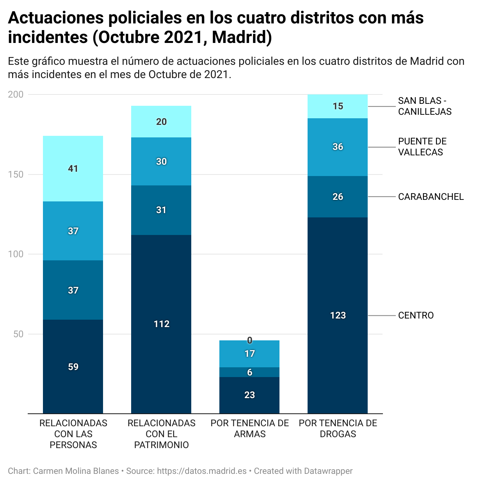
En este gráfico podemos observar de forma diferenciada el volumen de actuaciones policiales en los cuatro distritos de Madrid con más incidencia y la causa de las mismas. Para ello, he marcado cada distrito con un color diferente (todos tonalidades del azul) mostrando la tonalidad más oscura aquel distrioto con mayor incidencia de delitos (el centro, que aparece en azul oscuro), mientras que la tonalidad más clara muestra el distrito con menor incidencia (San Blas).
Por otra parte, he marcado que se muestren los datos exactos de cada variable. Ya que, de lo contrario, es posible visualizar un volumen aproximado, pero no la exactitud que corresponde a cada distrito.
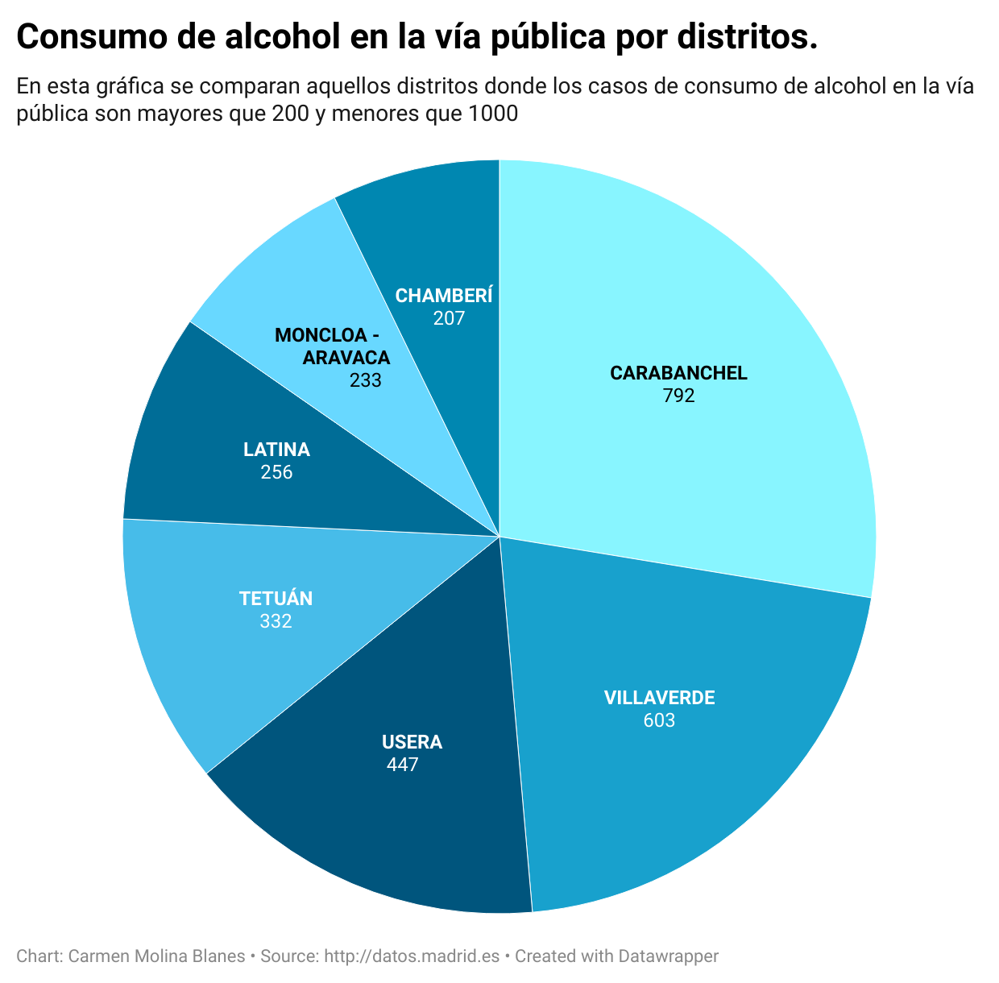
En este gráfico muestro las zonas con casos consumo de alcohol en la vía pública que oscilan entre los 200 y los 1000. Estos datos están divididos por distritos y muestran la cifra exacta de infricciones por zona. El uso de este tipo de gráfico se debe a la cantidad de distritos analizados, que se pueden visualizar de forma rápida en forma de circunfefrencia. Por otra parte, vuelvo a utiliar tonalidades de azul para distinguir las distintas zonas y evitar la monocromía. Auqnue estos colores son medianamente azarosos ya que hay algunos en celeste con cifras de hasta 792 delitos y otros en azul oscuro con solo 256.
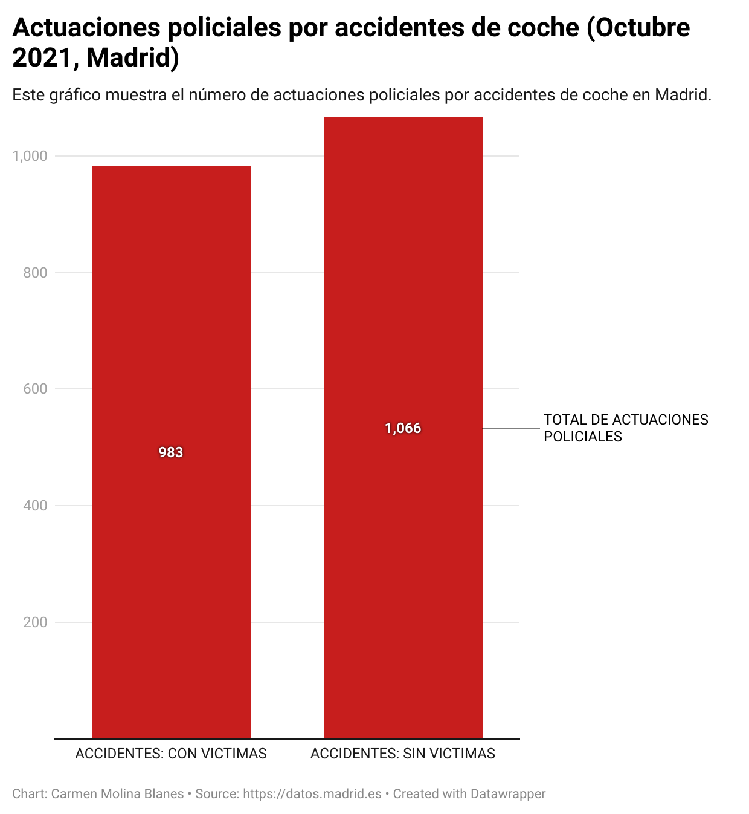
Subida a Pandoc
Proceso de descarga y creación de archivos .html
- Descarga de Pandoc y creación de la carpeta css/ desde la terminal (creé la carpeta con mkdir).
- Extraigo archivo de estilo y lo añado a index.html. Este archivo se llama bootstrap.min.css y el proceso se realizó desde nano.
- He creado con mkdir un archivo llamado docs/ donde he movido (con mv) index.html y sticky-footer-navbar.css.
- Tras esto, he creado un archivo .md fuera de mi repositorio al que he llamado pandoctest.md. Este tenía la finalidad de testear la aplicación Pandoc y su utilidad para transformar md en html. 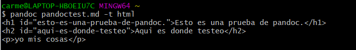
- Después he entrado en mi-repositorio y dentro de esta carpeta he convertido (con Pandoc) mis trabajos en .md en archivos .index.html. Esto lo he realizado desde la función "pandoc practica-3.md -o practica-3.index.html". 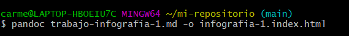
Edición de index.html
- En primer lugar he modificado el título a través de nano. He cambiado el título inicial por <title>Mis trabajos de Github</title>
- Me descargo bootstrap.bundle.min.js para mantener el diseño original del archivo index.html
- Entro en Pandoc y cambio a html5
- Este código lo copio y lo pego en el cuerpo de index.html. El cuerpo comineza después de la marca y el código de las prácticas las he copiado después de <div class="container">
Link
- https://elpais.com/elpais/2011/04/13/media/1302692233_720215.html
- En esta infografía se compara la situación socioeconómica de Barcelona con la de Madrid
- Esa comparación trabaja con múltiples categorías, entre ellas: paro, vivienda, salud...etc
- Considero que para la realización de esta infografía se ha debido utilizar un programa destinado al manejo de datos (como excel), además de un programa destinado al diseño.
- La utilidad de esta infografía se basa en la posibilidad de visualizar datos de forma sencilla y accesible para las personas con un nivel cultural medio, puesto que, si se muestran estos datos sin imagen y sin procesar podría resultar confuso.
- Esta comparativa utiliza diversos tipos de gráficos:
- Los primeros son circulares y los datos de inmigrantes se muestran a través de un cambio de color en el área de la circunferencia. De esta forma, podemos ver la comparativa de forma rápida.
- Los siguientes son de barras y ocupan la mayoría de la infografía
- Además de esto podemos encontrar una tabla comparativa con datos
TRABAJOS